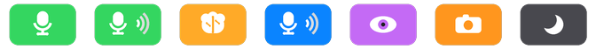

Screen Shot is the AI sidekick beside your screen — Shotty, until you rename them. No tab to open, no context to paste: they're already here. Eyes when you ask, a voice always, hands on request, and a memory of your days that never leaves your Mac.
Apple Silicon · macOS 13+ · free to start · early build: right-click → Open the first time

You always know what they're doing — hearing you, thinking, speaking, watching, asleep.
The AI world has chatbots you visit, agents that take over, and recorders that film everything. Screen Shot takes the fourth seat — beside you.
You go to them, paste your context, copy answers back. Screen Shot is already looking at the thing you're asking about — the context is the screen itself.
Autonomous agents drive your computer while you watch and hope. Screen Shot never drives — you stay the pilot, it assists at the speed of talking, and every action happens visibly at your ask.
Always-on capture tools archive your whole life and let you search it later. Screen Shot looks only when you ask, with a flash you can see — and what it remembers stays on your Mac.
Not another chat window. Shotty is a voice at your desk who can see what you see, remember what mattered, and actually do things.
They're listening whenever you're unmuted — just start talking. Interrupt them mid-sentence and they stop. One click and they sleep, costing nothing until you wake them.
"What am I looking at?" — a flash, a shutter, and they've read your screen. Say "watch my screen" for a soft glowing edge and continuous attention, or have them watch one window even when it's buried.
"Tell me when the build finishes." Shotty keeps watching and pipes up the moment it happens — the first companion who taps you on the shoulder.
Screens they've seen and talks you've had become a private memory graph on your Mac. Ask about yesterday's error, last week's page — they recall it, and can go look at the screenshot again.
Open sites, apps, and files. Find documents by name or content. Copy and paste for you, type dictation straight into any text field — verbatim or polished as you speak.
They search the web when the answer isn't on your screen or in their memory — news, people, prices, docs — and tell you they looked it up.
Your companion's memory — every screenshot, every transcript, everything they've learned about your life — lives in a database on your Mac, nowhere else. Screens are only captured when you ask or while you've told them to watch, always with a visible flash, glow, or menu-bar pill so nothing is ever secret. One switch turns memory off. One button erases all of it. Your key, your machine, your sidekick.
Start free today. Subscriptions arrive soon — nothing is charged yet, and the free path never goes away.
Launch pricing, subject to change. No payments are collected yet.
While they're awake and unmuted, yes — that's what makes them a sidekick instead of an app you open. The menu-bar pill always tells the truth: green means listening, red means muted, a moon means asleep. Asleep means fully disconnected.
Your voice and, when you ask them to look, your screen images go to the AI model to be understood in the moment — the same way any assistant works. What's different is storage: your companion's memory of you lives only on your Mac, and you can wipe it in one click.
This early build isn't yet notarized with Apple, so the first open needs a right-click → Open. Signed builds are coming.
The app is built cross-platform and a Windows version is on the way.
On the free plan you bring your own Gemini key and pay Google directly — typically pennies per hour of conversation. Screen Shot shows you a live meter so there are never surprises.